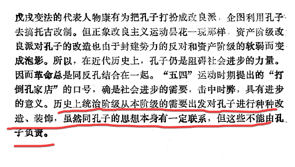

http://www.sss.net.cn/103000/6400.aspx 这是这篇文章全文的地址，文中倒是肯定了你说的这些，我没把文章贴全，这是我的错误。
折中主义黑文，以部分肯定真理来为实质上的背叛找正统性
那么,我们评价历史人物就必须从特定的社会历史条件出发不能凭空想象,不能以今天的观点去理解以前的历史。要把历史人物放到当时的历史条件和具体社会背景中去分析,既不能把历史人物理想化而任意拔高,也不能用今天的标准去苛求历史人物。所以,毛泽东说“王阳明也有一些真理。孔孟有一部分真理,全部否定是非历史的看法”。
这个才是他真正的论点，借特定语境下的结论来引出自己的结论，反对历史唯物在与儒法斗争，为尊儒反法反共留空间。

这是84年中修的尊孔黑书的提法，其本质和现代的庸俗辩证法的“一分为二”看待没有任何区别，就是给儒家思想乃至所有反动思想背书。
此文是中修教授所写，立场就是反动的。其文风也充满了中修特色的实用主义、折中主义及吸收西马西哲的理论体系的反动经院哲学词汇。而且此文前后矛盾的，即肯定了社会性又借此来引出生物性的可能性，就是搞折中罢了。
其与刘少奇的黑文也没什么大区别。
生理反应不是自然属性吗？结合马克思所说的这句话:“饥饿总是饥饿,但是用刀叉吃熟肉来解除的饥饿不同于用指甲和牙齿啃生肉来解除的饥饿。” 这不就是在说社会性下的生理反应（自然属性）吗？
人肯定会有生理反应，不然就死了，但是
你要搞清楚，这黑文的重心是论证存在永恒的先验的超越社会性与阶级性的生物性，引用了导师的正确论述之后自己加了私货以此引证自己唯心主义谬论
这我知道，那说人有自然属性（生理反应）对不对？或者说这俩词不是一个意思？
人当然是有自然属性的，但是不存在纯粹自然属性，只能通过社会性体现出来。
那我就明白了，自然属性=生理反应，但自然属性≠生物性，吃喝拉撒是生理反应，跟新陈代谢有关，但不是生物性